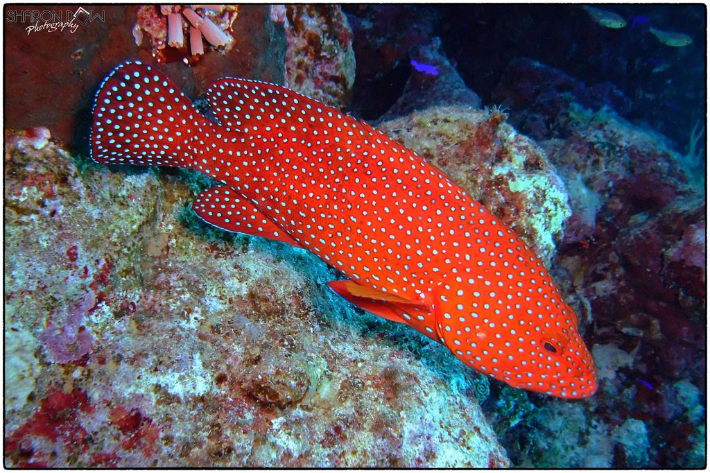
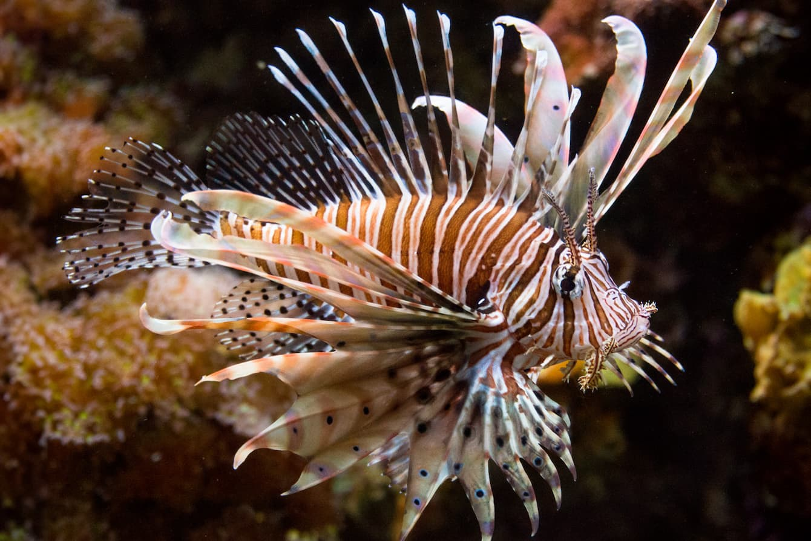

多元二甲 N13170031 陳均廷
深海的絢麗與危險
海洋是一個充滿神秘與美麗的湛藍宇宙。在這裡，花斑刺鰓鮨那猶如繁星般的斑斕色彩，展現了生命多樣性的奇蹟；而蓑鮋屬則披著華麗的戰袍，以優雅卻帶有劇毒的鰭條警告著世人。這兩種魚類完美詮釋了海洋的迷人與危險，每一次的潛水探險，都是一場視覺的饗宴與對大自然的敬畏。

花斑刺鰓鮨 (F338 Serranidae 鮨科)

蓑鮋屬（學名：Pterois）